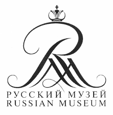
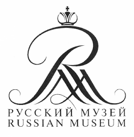

Это выставка входит в серию встреч посвещенных народам севера. При поддержке Государственного Русского музеея и ФГБУ Российского государственного музея Арктики и Антарктики», Библиотеки национальных литератур .

Открой себя на ---->
открытии выставки Виктории Бахерт
22 мая в 14.00 в Библиотеке национальных литератур
Садовая ул. д. 33
Открытие художественной выставки члена Союза художников России Виктории Бахерт «К берегам Антарктиды и Арктики»
[BIO]
Виктория Бахерт родилась в 1976 г.
в пос. Буркандья Магаданской обл.
В 2000 г. окончила РГПУ им. А.И. Герцена,
факультет изобразительного искусства
В 2004 г. окончила Российскую Академию Художеств им. И.Е. Репина, живописную мастерскую О.А.
Еремеева
С 2013 г. – член Союза Художников России
В ноябре 2012 г. Виктория совершила поездку в
Антарктиду на станцию Беллинсгаузен в сезонный период 57 Российской Антарктической
Экспедиции.
Известный искустовед Руслан Бахтияров пишет:
Мир живой природы, пожалуй, обретающий особую притягательность среди скупой фауны и флоры Антарктиды, предстает у автора удивительно естественным, связанным незримыми, но прочными нитями с условиями жизни, что неизбежно определяются климатом и характером ее ландшафта
подробнее
 Я люблю путешествовать.
Я люблю путешествовать. Мир открывается по-новому. Избавляясь от всего лишнего, я чувствую себя ближе к творчеству внутри себя.
Это ощущение свободы я люблю передовать в работах.
Ну, и путешествие - это всегда интересная история. Я вот как-то убегала от медведя.
 Прямо с мольбертом. В Антарктиде я поняла, что такое "рай". Он в отношениях между людьми.
"Помню, еще в студенческие годы на семинарах по истории искусства меня особенно привлекала жизнь
тех художников, творчество которых было связано с военными походами, морскими, археологическими
экспедициями, путешествиям, таких как В. Верещагин, К. Коровин, Э. Делакруа, Р. Кент…
В некоторой степени мне удается воплощать в своей жизни такие творческие идеалы".
Прямо с мольбертом. В Антарктиде я поняла, что такое "рай". Он в отношениях между людьми.
"Помню, еще в студенческие годы на семинарах по истории искусства меня особенно привлекала жизнь
тех художников, творчество которых было связано с военными походами, морскими, археологическими
экспедициями, путешествиям, таких как В. Верещагин, К. Коровин, Э. Делакруа, Р. Кент…
В некоторой степени мне удается воплощать в своей жизни такие творческие идеалы".
подробнее
 
